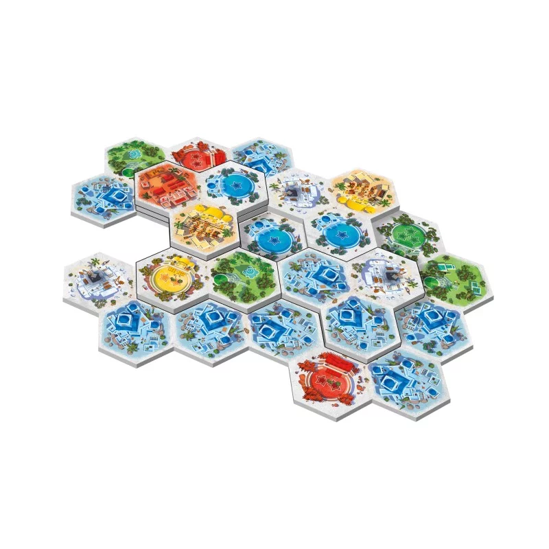

<!DOCTYPE html>
<html lang="en">
<head>
    <meta charset="UTF-8">
    <meta name="viewport" content="width=device-width, initial-scale=1.0">
    <title>Page Suivante</title>
    <link rel="stylesheet" href="style.css">
</head>
<body>
    <header class="rules-header">
        <h1>Bienvenue sur la page des règles</h1>

    <main>
    <h2>Akropolis !</h2>
    <!-- Affichage de l'image -->
    
    <p>Akropolis est un projet développé en langage C++, lors du semestre A25 en GI01 (c'est-à-dire le 1er semestre en branche informatique dans la 3ème année).</p>
    <p>Il s’agit d’un jeu de plateau, solo ou multijoueur</p>
    <ul>
        <li>
          Dans ce projet, il s'agit de concevoir et développer une application permettant de jouer au jeu de
société Akropolis créé par Jules Messaud, et édité par Gigamic. Dans ce jeu de pose de tuiles, les
joueurs prennent le rôle d'architectes qui s'arontent en créant chacun une cité à l'aide de  tuiles
cité . Chaque tuile cité est composé de 3  hexagones construction , chaque hexagone représentant
un  quartier , une  place  ou une  carrière . Il existe plusieurs types de quartier. Chaque quartier
rapporte des points de victoire s'ils sont correctement placés selon sont type :
 les habitations (quartiers bleus) : seules les habitations faisant partie du plus grand groupe
d'habitations adjacentes font gagner des points ;
 les marchés (quartiers jaunes) : ils ne doivent pas être adjacents à un autre marché pour rapporter
des points ;
 les casernes (quartiers rouges) : elles doivent se trouver en périphérie de la cité du joueur pour
rapporter des points ;
 les temples (quartiers violets) : ils doivent être complétement entourés pour raporter des points ;
 les jardins (tuiles vertes) : ils n'ont pas de contrainte de placement pour rapporter des points.
Les carrières ne rapportent pas de point lors du décompte nal, mais permettent d'obtenir des  pierres 
qui rapportent des points à la n ou permettent d'acheter des facilités de choix des tuiles cité lors de
son tour. Quand un Architecte recouvre une carrière à l'aide d'une nouvelle tuile, il prend une pierre de
la réserve.
Les places sont des multiplicateurs, qui augmentent le nombre de points rapportés par les quartiers
de même type. Le multiplicateur est représenté par des étoiles. Si un joueur possède plusieurs places
de même type, leurs étoiles sont cumulables. Il n'est pas nécessaire qu'une place soit adjacente aux
quartiers de même type.
À chaque tour, les joueurs vont choisir une tuile cité selon des contraintes données et l'ajouter à leur
cité de manière adjacente aux autres. Une tuile cité peut être posée au niveau du sol (niveau 1) ou la
superposer sur des tuiles existantes (niveaux supérieurs).
Le jeu se déroule en plusieurs tours jusqu'à épuisement des tuiles cité dont le nombre dépend du nombre
de joueurs. Le joueur qui possède le plus de point de victoire à la n de la partie l'emporte.
Ce jeu se joue de 2 à 4 joueurs mais propose un mode solo avec des règles précises simulant un adversaire
virtuel appelé  Illustre Constructeur . Trois niveaux de diculté vous sont proposés, faisant varier la
façon dont les points adverses sont comptabilisés
Le jeu propose quelques variantes qui permettent de corser le jeu. Dans ce cas, la mise en place et le dé-
roulé de la partie ne changent pas. Chaque variante propose une condition de placement supplémentaire
pour rapporter des points. Il est possible de jouer avec plusieurs variantes dans la même partie.
Pour découvrir ce jeu, vous pouvez consulter les règles en ligne et la façon de jouer en solo. Il est
conseillé de jouer quelques parties pour bien comprendre les diérents mécanismes du jeu. Vous pouvez
apprendre et jouer en ligne sur le site Board Game Arena. Vous pouvez aussi regarder les nombreux
tutoriels vidéos sur ce jeu.
        </li>
    </ul>
    <!-- Bouton pour retourner à la page des projets -->
    <a href="project.html" class="btn">Retour à la page des projets</a>
</main>

    </header>
</body>
</html>
